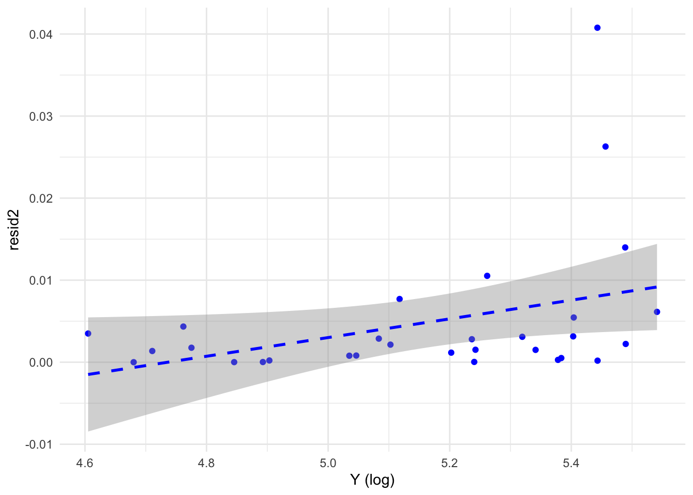
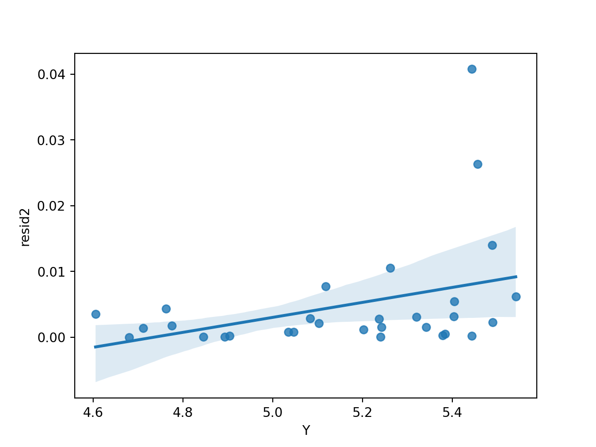

Aplicación 3.5 (Regresiones heteroscedásticas): Función de demanda con varianza no constante
Empleando datos de corte transversal, en este ejemplo se va a estimar un modelo de demanda para un determinado producto:
\[log(Q_{A,i}) = \beta_1 + \beta_2 log(P_{A,i}) + \beta_3 log(P_{B,i}) + \beta_4 log(P_{C,i}) + \beta_5 log(Y_{i}) + e_{i}\]
donde \(Q_{A}\) es la cantidad demandada del bien A analizado por el individuo i-ésimo, \(P_{A}\), \(P_{B}\) y \(P_{C}\) son, respectivamente, los precios de los bienes A, B y C en el mercado, e \(Y\) es el nivel de renta.
Una vez chequeada la hipótesis de varianza constante (homoscedasticidad), se plantea la estimación por MCP de la función de demanda bajo la hipótesis de un modelo heteroscedasticidad asociada al logaritmo de la renta del tipo siguiente:
\[{σ_i}^2 = e^{α_0 + α_1 log(Y_i)}\]
especificación equivale a suponer que
\[{σ_i}^2 = σ^2 (Y_i)^{α_1}\]
donde \[σ^2 = e^{α_0}\]
y de ahí que este tipo de especificación reciba el nombre de heteroscedasticidad multiplicativa.
De forma complementaria, compararemos los resultados de MCP con los que se obtienen al estimar la función de demanda por MCO, pero corrigiendo la matriz de covarianzas usando el método de White (MCO-HC).
Código R
# Lectura de librerías
library(tidyverse)
library(car)
library(skedastic)
library(lmtest)
library(sandwich)
# Lectura de datos
DEM_HET <- read_csv("data/DEM_HET.csv")
dim(DEM_HET)[1] 30 5summary(DEM_HET) PA PB PC QA
Min. : 89.15 Min. : 51.04 Min. : 85.85 Min. : 93.01
1st Qu.:102.52 1st Qu.: 74.72 1st Qu.:103.85 1st Qu.: 99.65
Median :111.77 Median : 81.49 Median :130.84 Median :105.93
Mean :109.02 Mean : 81.91 Mean :127.68 Mean :109.59
3rd Qu.:114.53 3rd Qu.: 90.13 3rd Qu.:145.07 3rd Qu.:117.28
Max. :124.85 Max. :111.66 Max. :182.04 Max. :140.97
Y
Min. :100.0
1st Qu.:139.5
Median :188.4
Mean :180.6
3rd Qu.:221.0
Max. :254.9 # Estimación MCO
modelo_MCO <- lm(log(QA) ~ log(PA) + log(PB) + log(PC)+ log(Y),
data = DEM_HET)
summary(modelo_MCO)
Call:
lm(formula = log(QA) ~ log(PA) + log(PB) + log(PC) + log(Y),
data = DEM_HET)
Residuals:
Min 1Q Median 3Q Max
-0.11826 -0.04692 -0.01407 0.03830 0.20191
Coefficients:
Estimate Std. Error t value Pr(>|t|)
(Intercept) 4.2747 1.2052 3.547 0.001570 **
log(PA) -0.8901 0.2157 -4.126 0.000358 ***
log(PB) 0.5542 0.1300 4.262 0.000252 ***
log(PC) -0.3491 0.1831 -1.906 0.068154 .
log(Y) 0.7440 0.1352 5.503 1.02e-05 ***
---
Signif. codes: 0 '***' 0.001 '**' 0.01 '*' 0.05 '.' 0.1 ' ' 1
Residual standard error: 0.07619 on 25 degrees of freedom
Multiple R-squared: 0.6643, Adjusted R-squared: 0.6106
F-statistic: 12.37 on 4 and 25 DF, p-value: 1.105e-05# Chequeo de la hipótesis de homoscedasticidad
# Contrastes estándar (automáticos): Z's -> variables explicativas del modelo
# Test de White
white(modelo_MCO)# A tibble: 1 × 5
statistic p.value parameter method alternative
<dbl> <dbl> <dbl> <chr> <chr>
1 7.90 0.443 8 White's Test greater white(modelo_MCO, interactions=TRUE)# A tibble: 1 × 5
statistic p.value parameter method alternative
<dbl> <dbl> <dbl> <chr> <chr>
1 12.9 0.535 14 White's Test greater # Test de Glejser
glejser(modelo_MCO)# A tibble: 1 × 4
statistic p.value parameter alternative
<dbl> <dbl> <dbl> <chr>
1 6.65 0.156 4 greater # Test de Breusch-Pagan
breusch_pagan(modelo_MCO)# A tibble: 1 × 5
statistic p.value parameter method alternative
<dbl> <dbl> <dbl> <chr> <chr>
1 4.38 0.357 4 Koenker (studentised) greater # Contrastes específicos: Z's seleccionadas
# Test de Breusch-Pagan (manual)
DEM_HET$resid2 = resid(modelo_MCO)^2
# Análisis gráfico
ggplot(DEM_HET, aes(x = log(Y), y = resid2)) +
geom_point(color = "blue") +
geom_smooth(method='lm', formula = y~x, se = TRUE,
color = "blue", linetype = "dashed") +
xlab("Y (log)") +
ylab("resid2") +
theme_minimal()
# Regresión auxiliar
summary(modelo_resid2 <- lm(resid2 ~ log(Y), data=DEM_HET))
Call:
lm(formula = resid2 ~ log(Y), data = DEM_HET)
Residuals:
Min 1Q Median 3Q Max
-0.007864 -0.004221 -0.002092 0.001574 0.032720
Coefficients:
Estimate Std. Error t value Pr(>|t|)
(Intercept) -0.05395 0.02832 -1.905 0.0671 .
log(Y) 0.01139 0.00548 2.078 0.0469 *
---
Signif. codes: 0 '***' 0.001 '**' 0.01 '*' 0.05 '.' 0.1 ' ' 1
Residual standard error: 0.008199 on 28 degrees of freedom
Multiple R-squared: 0.1337, Adjusted R-squared: 0.1027
F-statistic: 4.32 on 1 and 28 DF, p-value: 0.04695N <- nobs(modelo_resid2)
p <- 1 # Número Z's de la regresión auxiliar, sin incluir la constante
sm_resid2 <- summary(modelo_resid2)
R2_m_resid2 <- sm_resid2$r.squared
BP <- N*R2_m_resid2
# Contraste Chi-cuadrado
pval <- 1-pchisq(BP, p)
BP ; pval [1] 4.009848[1] 0.04523524# Test de Breusch-Pagan (automático)
bptest(modelo_MCO, varformula = ~ log(Y), data=DEM_HET)
studentized Breusch-Pagan test
data: modelo_MCO
BP = 4.0098, df = 1, p-value = 0.04524# Test de Breusch-Pagan robusto (variante de Koenker)
bptest(modelo_MCO, varformula = ~ log(Y), data=DEM_HET, studentize = FALSE)
Breusch-Pagan test
data: modelo_MCO
BP = 6.2053, df = 1, p-value = 0.01274# Corrección básica de la heteroscedasticidad:
# Matriz de covarianzas robusta (MCO-HC)
# Corrección de White (librería sandwich)
coeftest(modelo_MCO, vcov. = vcovHC(modelo_MCO,type="HC1"))
t test of coefficients:
Estimate Std. Error t value Pr(>|t|)
(Intercept) 4.27468 0.89931 4.7533 7.062e-05 ***
log(PA) -0.89012 0.13561 -6.5639 7.083e-07 ***
log(PB) 0.55419 0.08331 6.6521 5.704e-07 ***
log(PC) -0.34909 0.15058 -2.3182 0.02891 *
log(Y) 0.74395 0.11879 6.2627 1.494e-06 ***
---
Signif. codes: 0 '***' 0.001 '**' 0.01 '*' 0.05 '.' 0.1 ' ' 1# Otra versión, con idéntico resultado (librería car)
coeftest(modelo_MCO, vcov.=hccm(modelo_MCO, type = "hc1"))
t test of coefficients:
Estimate Std. Error t value Pr(>|t|)
(Intercept) 4.27468 0.89931 4.7533 7.062e-05 ***
log(PA) -0.89012 0.13561 -6.5639 7.083e-07 ***
log(PB) 0.55419 0.08331 6.6521 5.704e-07 ***
log(PC) -0.34909 0.15058 -2.3182 0.02891 *
log(Y) 0.74395 0.11879 6.2627 1.494e-06 ***
---
Signif. codes: 0 '***' 0.001 '**' 0.01 '*' 0.05 '.' 0.1 ' ' 1# Corrección avanzada: mínimos cuadrados ponderados (MCP)
# Regresión auxiliar para el logaritmo de la varianza estimada
summary(modelo_l_resid2 <- lm(log(resid2) ~ log(Y), data=DEM_HET))
Call:
lm(formula = log(resid2) ~ log(Y), data = DEM_HET)
Residuals:
Min 1Q Median 3Q Max
-5.5616 -0.6447 0.1990 1.7185 3.2886
Coefficients:
Estimate Std. Error t value Pr(>|t|)
(Intercept) -26.658 7.565 -3.524 0.00148 **
log(Y) 3.846 1.464 2.628 0.01379 *
---
Signif. codes: 0 '***' 0.001 '**' 0.01 '*' 0.05 '.' 0.1 ' ' 1
Residual standard error: 2.19 on 28 degrees of freedom
Multiple R-squared: 0.1978, Adjusted R-squared: 0.1692
F-statistic: 6.905 on 1 and 28 DF, p-value: 0.01379# Estimación de la varianza residual (no constante)
sigma2 <- exp(fitted(modelo_l_resid2))
# MCO con ponderaciones: MCP (FGLS)
summary(modelo_MCP <- lm(log(QA) ~ log(PA) + log(PB) + log(PC)+ log(Y),
weights = 1/sigma2, data = DEM_HET))
Call:
lm(formula = log(QA) ~ log(PA) + log(PB) + log(PC) + log(Y),
data = DEM_HET, weights = 1/sigma2)
Weighted Residuals:
Min 1Q Median 3Q Max
-5.2922 -0.9431 -0.1967 1.4063 3.8662
Coefficients:
Estimate Std. Error t value Pr(>|t|)
(Intercept) 4.48077 0.87248 5.136 2.62e-05 ***
log(PA) -0.90716 0.14931 -6.076 2.38e-06 ***
log(PB) 0.54594 0.10265 5.318 1.64e-05 ***
log(PC) -0.24882 0.12394 -2.007 0.0556 .
log(Y) 0.63130 0.08844 7.138 1.76e-07 ***
---
Signif. codes: 0 '***' 0.001 '**' 0.01 '*' 0.05 '.' 0.1 ' ' 1
Residual standard error: 2.026 on 25 degrees of freedom
Multiple R-squared: 0.7734, Adjusted R-squared: 0.7372
F-statistic: 21.33 on 4 and 25 DF, p-value: 9.299e-08Código Python
# Lectura de librerías
import numpy as np
import pandas as pd
import matplotlib.pyplot as plt
import seaborn as sns
import statsmodels.api as sm
import statsmodels.formula.api as smf
import statsmodels.stats.api as sms
import statsmodels.stats as smstats
import statsmodels.stats.diagnostic as smsdiag
# Lectura de datos
DEM_HET = pd.read_csv('data/DEM_HET.csv')
DEM_HET.describe() PA PB PC QA Y
count 30.000000 30.000000 30.000000 30.000000 30.000000
mean 109.024334 81.911667 127.679001 109.594333 180.644667
std 8.747229 12.729947 24.977371 13.852708 46.540796
min 89.150002 51.040001 85.849998 93.010002 100.000000
25% 102.519999 74.720001 103.850002 99.652502 139.475002
50% 111.770000 81.489998 130.834999 105.930000 188.370003
75% 114.527502 90.132498 145.067497 117.282501 221.032501
max 124.849998 111.660004 182.039993 140.970001 254.949997# Estimación MCO
modelo1 = smf.ols(formula = "np.log(QA) ~ np.log(PA) + np.log(PB) + np.log(PC) + np.log(Y)", data = DEM_HET)
modelo_MCO = modelo1.fit()
print(modelo_MCO.summary()) OLS Regression Results
==============================================================================
Dep. Variable: np.log(QA) R-squared: 0.664
Model: OLS Adj. R-squared: 0.611
Method: Least Squares F-statistic: 12.37
Date: Wed, 15 Nov 2023 Prob (F-statistic): 1.10e-05
Time: 09:38:46 Log-Likelihood: 37.403
No. Observations: 30 AIC: -64.81
Df Residuals: 25 BIC: -57.80
Df Model: 4
Covariance Type: nonrobust
==============================================================================
coef std err t P>|t| [0.025 0.975]
------------------------------------------------------------------------------
Intercept 4.2747 1.205 3.547 0.002 1.792 6.757
np.log(PA) -0.8901 0.216 -4.126 0.000 -1.334 -0.446
np.log(PB) 0.5542 0.130 4.262 0.000 0.286 0.822
np.log(PC) -0.3491 0.183 -1.906 0.068 -0.726 0.028
np.log(Y) 0.7440 0.135 5.503 0.000 0.466 1.022
==============================================================================
Omnibus: 8.115 Durbin-Watson: 2.471
Prob(Omnibus): 0.017 Jarque-Bera (JB): 6.392
Skew: 0.989 Prob(JB): 0.0409
Kurtosis: 4.095 Cond. No. 840.
==============================================================================
Notes:
[1] Standard Errors assume that the covariance matrix of the errors is correctly specified.# Contrastes de heteroscedasticidad
name = ['LM statistic', 'Chi^2 p-val', 'F statistic', 'F p-val']
# Test de White
W_test = smsdiag.het_white(modelo_MCO.resid, modelo_MCO.model.exog)
print(pd.DataFrame([np.round(W_test, 8)], columns=name)) LM statistic Chi^2 p-val F statistic F p-val
0 12.888845 0.535294 0.807045 0.653204# Test de Breusch-Pagan
BP_test = smsdiag.het_breuschpagan(modelo_MCO.resid, modelo_MCO.model.exog)
print(pd.DataFrame([np.round(BP_test, 8)], columns=name)) LM statistic Chi^2 p-val F statistic F p-val
0 4.382204 0.356744 1.069131 0.392569# Estimación MCO-HC
modelo1 = smf.ols(formula = "np.log(QA) ~ np.log(PA) + np.log(PB) + np.log(PC) + np.log(Y)", data = DEM_HET)
# HC1 -> corrige la fórmula de White por grados de libertad
modelo_MCO_HC1 = modelo1.fit(cov_type='HC1')
print(modelo_MCO_HC1.summary()) OLS Regression Results
==============================================================================
Dep. Variable: np.log(QA) R-squared: 0.664
Model: OLS Adj. R-squared: 0.611
Method: Least Squares F-statistic: 26.61
Date: Wed, 15 Nov 2023 Prob (F-statistic): 1.09e-08
Time: 09:38:46 Log-Likelihood: 37.403
No. Observations: 30 AIC: -64.81
Df Residuals: 25 BIC: -57.80
Df Model: 4
Covariance Type: HC1
==============================================================================
coef std err z P>|z| [0.025 0.975]
------------------------------------------------------------------------------
Intercept 4.2747 0.899 4.753 0.000 2.512 6.037
np.log(PA) -0.8901 0.136 -6.564 0.000 -1.156 -0.624
np.log(PB) 0.5542 0.083 6.652 0.000 0.391 0.717
np.log(PC) -0.3491 0.151 -2.318 0.020 -0.644 -0.054
np.log(Y) 0.7440 0.119 6.263 0.000 0.511 0.977
==============================================================================
Omnibus: 8.115 Durbin-Watson: 2.471
Prob(Omnibus): 0.017 Jarque-Bera (JB): 6.392
Skew: 0.989 Prob(JB): 0.0409
Kurtosis: 4.095 Cond. No. 840.
==============================================================================
Notes:
[1] Standard Errors are heteroscedasticity robust (HC1)# HC2 -> corrige la fórmula de White por grados de libertad y tamaño muestral pequeño
modelo_MCO_HC2 = modelo1.fit(cov_type='HC2')
print(modelo_MCO_HC2.summary()) OLS Regression Results
==============================================================================
Dep. Variable: np.log(QA) R-squared: 0.664
Model: OLS Adj. R-squared: 0.611
Method: Least Squares F-statistic: 25.98
Date: Wed, 15 Nov 2023 Prob (F-statistic): 1.38e-08
Time: 09:38:46 Log-Likelihood: 37.403
No. Observations: 30 AIC: -64.81
Df Residuals: 25 BIC: -57.80
Df Model: 4
Covariance Type: HC2
==============================================================================
coef std err z P>|z| [0.025 0.975]
------------------------------------------------------------------------------
Intercept 4.2747 0.904 4.727 0.000 2.502 6.047
np.log(PA) -0.8901 0.138 -6.470 0.000 -1.160 -0.620
np.log(PB) 0.5542 0.085 6.488 0.000 0.387 0.722
np.log(PC) -0.3491 0.151 -2.308 0.021 -0.646 -0.053
np.log(Y) 0.7440 0.119 6.275 0.000 0.512 0.976
==============================================================================
Omnibus: 8.115 Durbin-Watson: 2.471
Prob(Omnibus): 0.017 Jarque-Bera (JB): 6.392
Skew: 0.989 Prob(JB): 0.0409
Kurtosis: 4.095 Cond. No. 840.
==============================================================================
Notes:
[1] Standard Errors are heteroscedasticity robust (HC2)# Estimación MCP (FGLS)
# Análisis gráfico
DEM_HET['resid2'] = (modelo_MCO.resid)**2
sns.regplot(x=np.log(DEM_HET['Y']), y = DEM_HET['resid2'])
plt.show()
# Regresión auxiliar para el logaritmo de la varianza estimada
reg_aux_resid2 = smf.ols(formula = "np.log(resid2) ~ np.log(Y)", data = DEM_HET)
modelo_l_resid2 = reg_aux_resid2.fit()
print(modelo_l_resid2.summary()) OLS Regression Results
==============================================================================
Dep. Variable: np.log(resid2) R-squared: 0.198
Model: OLS Adj. R-squared: 0.169
Method: Least Squares F-statistic: 6.905
Date: Wed, 15 Nov 2023 Prob (F-statistic): 0.0138
Time: 09:38:47 Log-Likelihood: -65.049
No. Observations: 30 AIC: 134.1
Df Residuals: 28 BIC: 136.9
Df Model: 1
Covariance Type: nonrobust
==============================================================================
coef std err t P>|t| [0.025 0.975]
------------------------------------------------------------------------------
Intercept -26.6579 7.565 -3.524 0.001 -42.154 -11.161
np.log(Y) 3.8463 1.464 2.628 0.014 0.848 6.845
==============================================================================
Omnibus: 3.869 Durbin-Watson: 2.164
Prob(Omnibus): 0.144 Jarque-Bera (JB): 2.972
Skew: -0.771 Prob(JB): 0.226
Kurtosis: 3.035 Cond. No. 101.
==============================================================================
Notes:
[1] Standard Errors assume that the covariance matrix of the errors is correctly specified.# Estimación de la varianza residual (no constante)
sigma2 = np.exp(modelo_l_resid2.fittedvalues)
w=list(1/sigma2)
# MCO con ponderaciones (FGLS)
modelo2 = smf.wls(formula = "np.log(QA) ~ np.log(PA) + np.log(PB) + np.log(PC) + np.log(Y)", weights = w , data = DEM_HET)
modelo_MCP = modelo2.fit()
print(modelo_MCP.summary()) WLS Regression Results
==============================================================================
Dep. Variable: np.log(QA) R-squared: 0.773
Model: WLS Adj. R-squared: 0.737
Method: Least Squares F-statistic: 21.33
Date: Wed, 15 Nov 2023 Prob (F-statistic): 9.30e-08
Time: 09:38:47 Log-Likelihood: 41.087
No. Observations: 30 AIC: -72.17
Df Residuals: 25 BIC: -65.17
Df Model: 4
Covariance Type: nonrobust
==============================================================================
coef std err t P>|t| [0.025 0.975]
------------------------------------------------------------------------------
Intercept 4.4808 0.872 5.136 0.000 2.684 6.278
np.log(PA) -0.9072 0.149 -6.076 0.000 -1.215 -0.600
np.log(PB) 0.5459 0.103 5.318 0.000 0.335 0.757
np.log(PC) -0.2488 0.124 -2.007 0.056 -0.504 0.006
np.log(Y) 0.6313 0.088 7.138 0.000 0.449 0.813
==============================================================================
Omnibus: 2.395 Durbin-Watson: 2.584
Prob(Omnibus): 0.302 Jarque-Bera (JB): 1.170
Skew: -0.196 Prob(JB): 0.557
Kurtosis: 3.884 Cond. No. 899.
==============================================================================
Notes:
[1] Standard Errors assume that the covariance matrix of the errors is correctly specified.